By: Team THRIFT Since: Sept 2019 Licence: MIT
- 1. Introduction
- 2. Quick start
- 3. Features:
- 3.1. Setting monthly budget:
budget - 3.2. Adding an expense:
add_expense - 3.3. Adding an income:
add_income - 3.4. Deleting a transaction:
delete - 3.5. Updating a transaction’s details:
update - 3.6. Tagging a transaction:
tag - 3.7. Untagging a transaction:
untag - 3.8. Converting currency:
convert - 3.9. Cloning a transaction:
clone - 3.10. Undoing the previous undoable command:
undo - 3.11. Redoing the undone command:
redo - 3.12. Finding transactions with keywords:
find - 3.13. Listing transactions with the use of filters:
list - 3.14. Displaying help page:
help - 3.15. Exiting THRIFT:
exit - 3.16. Generating an external report
[coming in v2.0] - 3.17. Recommending dining options based on budget using Artificial Intelligence
[coming in v2.0] - 3.18. Encrypting THRIFT data
[coming in v2.0]
- 3.1. Setting monthly budget:
- 4. Frequently asked questions
- 5. Command summary
- 6. Appendix
1. Introduction
THRIFT is for money-conscious NUS students who wish to track their spending, in order to make better informed decisions when it comes to saving money. Maintain records of your daily incoming and outgoing transactions to constantly keep track of your finances! THRIFT is optimized for those who prefer to work with a Command Line Interface (CLI) while still enjoying the benefits of having a Graphical User Interface (GUI). If you want a simple, no-frills finance tracker, look no further than THRIFT!
This is how THRIFT looks like:
2. Quick start
-
Ensure that you have Java
11or above installed in your Computer. -
Download the latest THRIFT.jar here.
-
Copy the file to the folder you want to use as the home folder for your THRIFT application.
-
Double-click the file to start the app, the GUI should appear in a few seconds.
-
Type the command in the Command Box and press
Enterto execute it. e.g. typinghelpand pressingEnterwill open the help window. -
Some example commands you can try:
-
add_expense n/Apple Airpods v/200: adds an expense calledApple Airpodswhich cost $200. -
add_income n/Bursary Award v/350: adds an income calledBursary Awardwhich incremented your budget by $350. -
delete i/1: deletes the 1st transaction in the current list shown in the UI.
-
3. Features:
Understanding this document:
| This symbol indicates a tip that you may find useful when using THRIFT. |
| This symbol indicates information that you may want to take note of when using THRIFT. |
| This symbol indicates information that you need to be cautious of when using THRIFT. |
add_expense
|
Words with a grey highlight (called a mark-up) indicates that it is a command, or a part of it. |
||
| Enter |
Words styled like this indicates a keyboard button. |
||
| UPPER_CASE |
Words in UPPER_CASE are parameters to be supplied by you. e.g.
|
||
| add_expense n/Lunch v/5 |
Words in bold indicates the input that would be entered by you. |
||
| Debt |
Words in italics indicate the literals used in the example commands. |
||
| [ ] |
Words in square brackets |
||
| … |
Parameters with |
3.1. Setting monthly budget: budget
Ready to save? One of the key steps in saving money is to clearly define your monthly budget. With a budget set, you will always see your remaining balance! This will definitely encourage you to spend wisely and to keep your spending in check. Take the first step in saving by setting your budget for each month in THRIFT!
| It is not compulsory to set a budget for each month and you can use THRIFT normally without setting budgets. |
3.1.1. Command syntax
To execute the budget command, you have to use the following syntax:
budget v/VALUE d/MONTH/YEAR
3.1.2. Example usage
You wish to set your budget for the month October 2019 as $2000:
-
Your current budget for the month October 2019 is $0.

-
You type: budget v/2000 d/10/2019 in the Command Box and press Enter.

-
You should see in the Result Box that your budget for October 2019 has been set to $2000.
If you are changing your budget for the current displayed month, you should see the changes on the GUI immediately. 
3.2. Adding an expense: add_expense
One of the most important features of THRIFT is to allow you to track your expenses by adding them into THRIFT.
3.2.1. Command syntax
To execute the add_expense command, you have to use the following syntax:
add_expense n/EXPENSE_NAME v/VALUE [r/REMARK] [t/TAG]…
The default currency is in Singapore Dollars (SGD). You are recommended to convert foreign currencies to SGD before adding the value as the VALUE.
|
3.2.2. Example usage
You had the famous Laksa from "The Deck" for lunch which cost $10.50 and you wish to track it in THRIFT:
-
You have a remaining balance of $2000 at the beginning.
-
You type: add_expense n/Laksa v/10.50 r/Delicious! From "The Deck" t/Lunch into the Command Box and press Enter.
The transaction date is automatically populated based on your system time. 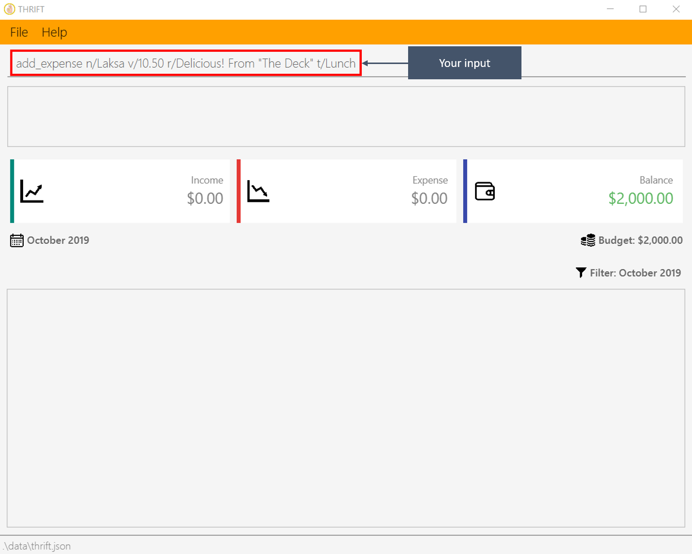 -
You should see that your Laksa lunch has been added into THRIFT with the details that you specified, as well as your new balance.
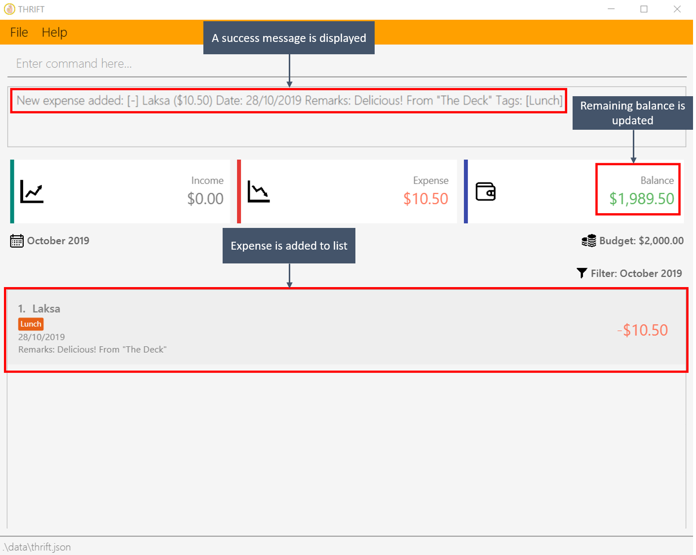
3.3. Adding an income: add_income
Being able to add an income transaction is just as important as tracking your expenses. THRIFT is able to track all of your incoming transactions as well.
3.3.1. Command syntax
To execute the add_income command, you have to use the following syntax:
add_income n/INCOME_NAME v/VALUE [r/REMARK] [t/TAG]…
3.3.2. Example usage
You studied extremely hard during the year and you were awarded a bursary incentive of $500. You wish to add it to THRIFT to update your remaining balance with this reward:
-
You have a balance of $2000 at the beginning.

-
You type: add_income n/Bursary v/500 r/For studying hard in the year t/Award into the Command Box and press Enter.
The transaction date is automatically populated based on your system time. 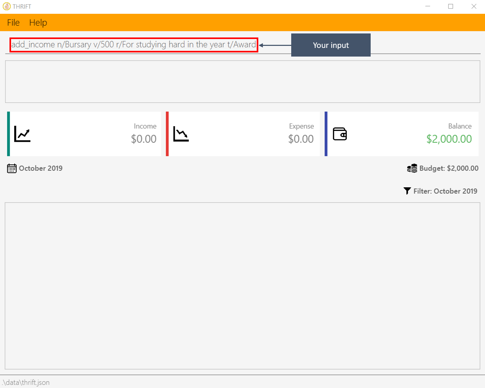 -
You should see that your bursary has been added into THRIFT with the details that you specified, as well as your new balance.
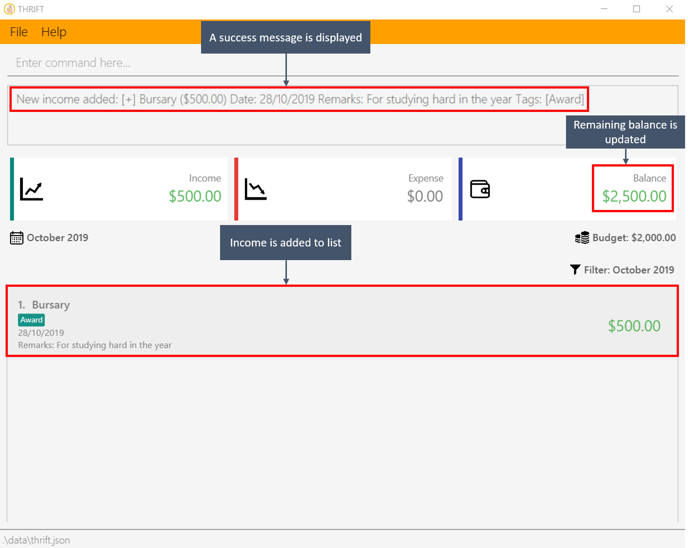
3.4. Deleting a transaction: delete
If you find that a transaction is no longer relevant to you, you may delete it from THRIFT.
3.4.1. Command syntax
To execute the delete command, you have to use the following syntax:
delete i/INDEX
3.4.2. Example usage
Assume that you wish to delete a bursary income transaction from your transaction list because the bursary was mistakenly awarded to you.
-
This transaction is currently the first transaction in your transaction list.

-
You type: delete i/1 and press Enter.
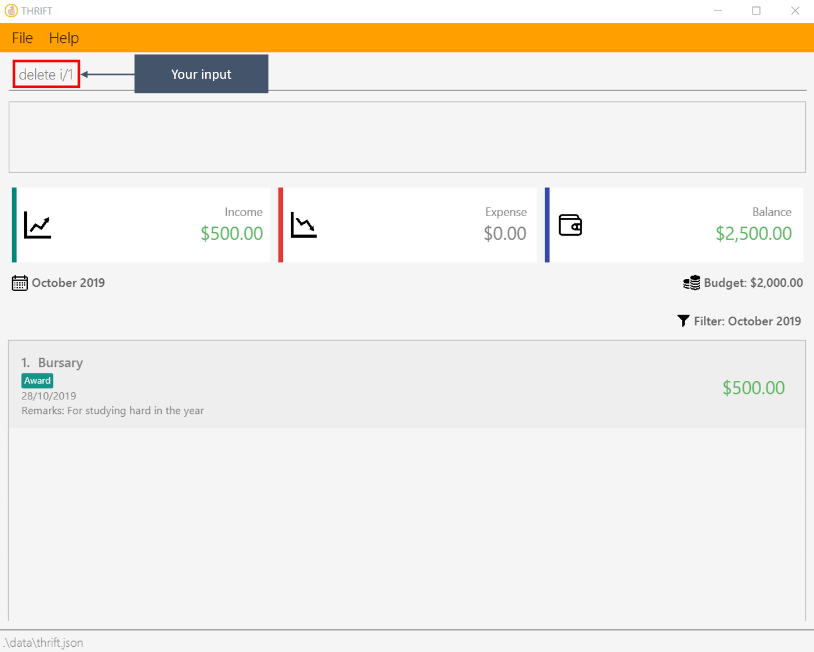 -
You should see that the bursary transaction has been deleted from THRIFT and your balance has been updated accordingly.
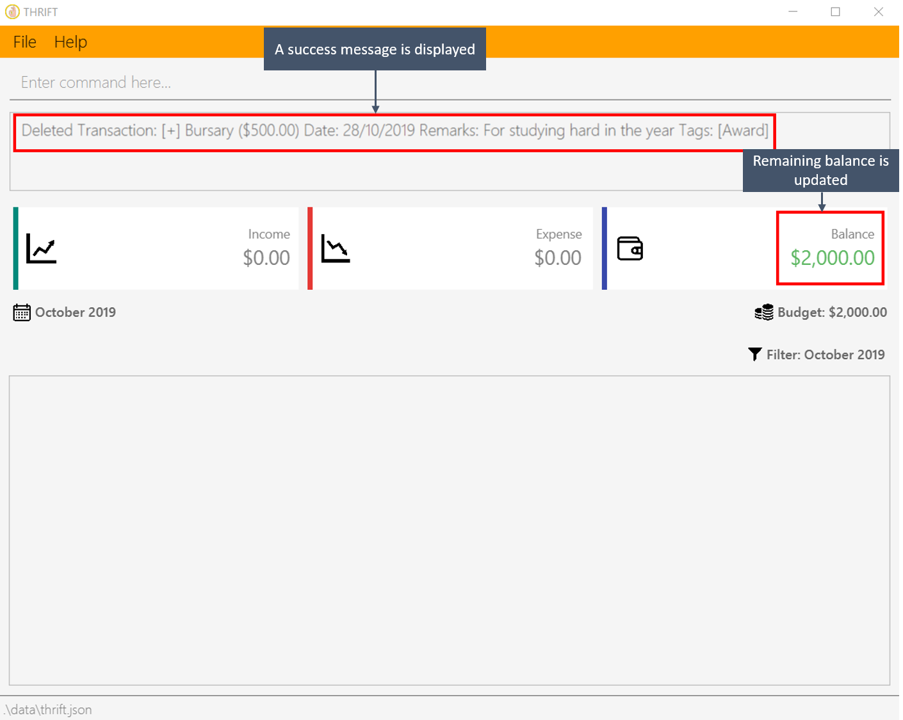
3.5. Updating a transaction’s details: update
Made a mistake when creating a transaction? Have new details for an existing transaction? Simply utilize THRIFT’s
update feature to make changes.
3.5.1. Command syntax
To execute the update command, you have to use the following syntax:
update i/INDEX [n/NEW_NAME] [v/NEW_VALUE] [r/NEW_REMARK] [t/NEW_TAG] …
Here is an explanation for the update command:
3.5.2. Example usage
You order a bowl of delicious Laksa and key in the details of this food expense into THRIFT. However, after your meal you realize you recorded some incorrect details - the Laksa was Asam Laksa, not Curry Laksa as you thought, and you paid more than the menu price (which you recorded) due to taxes. You also want to add a remark and tag.
Fortunately, you can easily update such details in THRIFT. Here is what you do from beginning to end:
-
You initially have a "Curry Laksa" expense in THRIFT. It is at index 2 in the list.

-
When you realize the Laksa is not Curry Laksa and want to change the transaction’s name, you type update i/2 n/Laksa into the Command Box and press Enter.
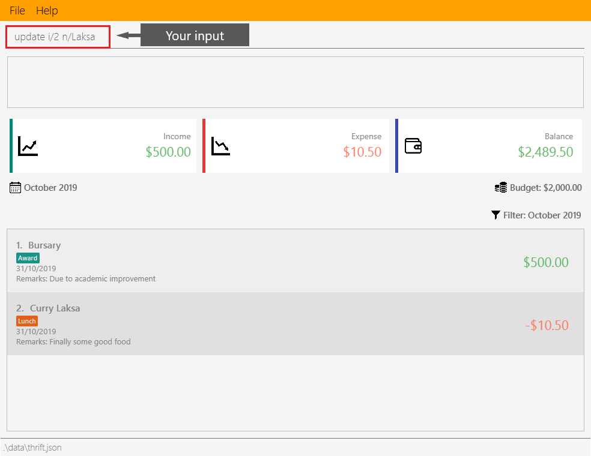 -
You should see that the "Curry Laksa" transaction’s name is updated to "Laksa". The status message also tells you what the original transaction was.
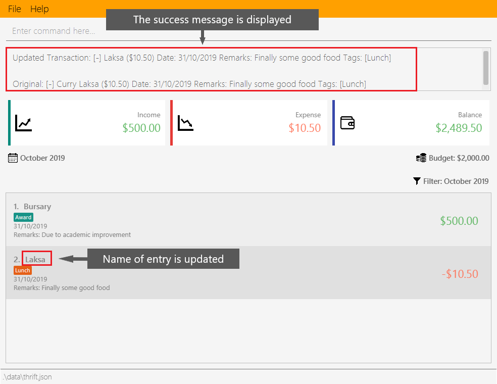 -
Later on, you want to change the name and value, as well as add a remark and tag. You type:
update i/2 n/Asam Laksa v/12 r/My first time trying! t/Food t/Lunch
and press Enter.
-
You can see the updated details of the transaction at index 2. The status message tells you what the original transaction was. The transaction month’s Expense and Balance trackers are also updated.

3.6. Tagging a transaction: tag
If you want to categorise your incomes and expenses, you can associate them with a custom meaningful tag using the tag command.
3.6.1. Command syntax
To execute the tag command, you have to use the following syntax:
tag i/INDEX t/TAG_NAME…
3.6.2. Example usage
Assume you have a few transaction entries already inside THRIFT, and one of them is not categorised yet. You want to tag that entry with a meaningful tag.
Here’s how you can do that:
-
You want to tag "Uniqlo Jeans" (the entry displayed at index 2) with the tag Shopping since it’s part of your shopping.

-
You type tag i/2 t/Shopping into the Command Box and press Enter.

-
You will now see that a text representation of both the updated and original entry is displayed in the Result Box and that the tag has appeared at the entry indicating that it has been successfully tagged.
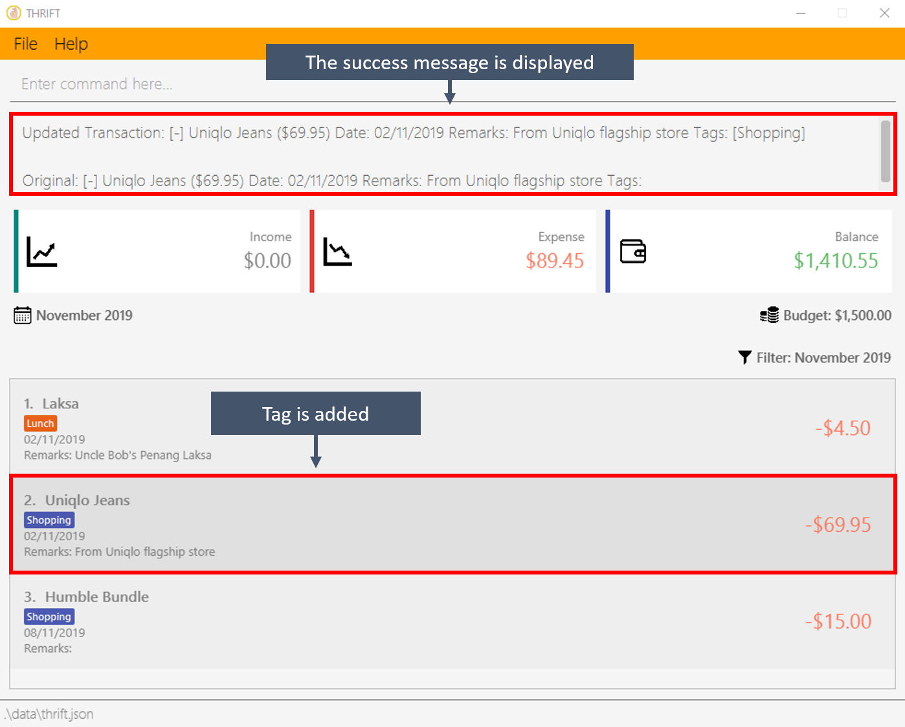
3.7. Untagging a transaction: untag
An entry can be associated with an incorrect tag due to various reasons.
Perhaps you made a mistake tagging the entry or perhaps the tag became invalid as it lost its meaning over time,
you can fix that by dissociating the tag from the entry using the untag command.
3.7.1. Command syntax
To execute the untag command, you have to use the following syntax:
untag i/INDEX t/TAG_NAME…
3.7.2. Example usage
Assume you have a few transaction entries already inside THRIFT, and one of them has an incorrect tag. You want to dissociate the incorrect tag from that entry.
Here’s how you can do that:
-
You want to dissociate the tag Important from "Humble Bundle" (the entry displayed at index 3) since it is not very important.
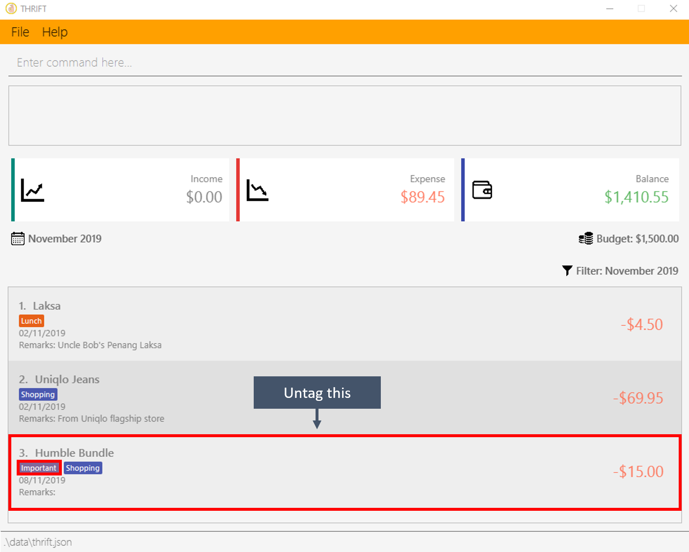 -
You type untag i/3 t/Important into the Command Box and press Enter.

-
You will now see that a text representation of both the updated and original entry is displayed in the Result Box and that the tag has disappeared from the entry indicating that it has been successfully removed.

3.8. Converting currency: convert
If you want to travel overseas or go on exchange, you will definitely need foreign currencies.
To see how much foreign currency you can get with your local currency, you can use the convert command to get an estimate.
3.8.1. Command syntax
To execute the convert command, you have to use the following syntax:
convert [v/VALUE] c/CURRENCY…
3.8.2. Example usage
Assume you want an estimate of how much foreign currency you can get with your local currency and you want to do so without leaving THRIFT.
Here’s how you can do that:
-
You want an estimate on how much USD you can get with SGD1000.
-
You type convert v/1000 c/SGD c/USD into the Command Box and press Enter.

-
You will now see the result of the conversion displayed in the Result Box.

3.9. Cloning a transaction: clone
Occasionally, you may want to copy a transaction, or create multiple copies of a transaction for recurring incomes or
expenses such as a yearly donation or monthly bills. Simply use the clone feature to achieve this.
3.9.1. Command syntax
To execute the clone command, you have to use the following syntax:
clone i/INDEX [o/FREQUENCY:NUMBER_OF_OCCURRENCES]
The following is an explanation for the clone command:
3.9.2. Example usage
You receive your fixed salary on the 30th of every month. You don’t want to tediously add your salary to THRIFT every month, so you add clones of your salary income for the next year at one go.
You do the following on 30 November 2019:
| The following example uses the displayed list of all existing transactions. |
-
You have the salary income entry you received on 30/11/2019 in the list. It is at index 4.
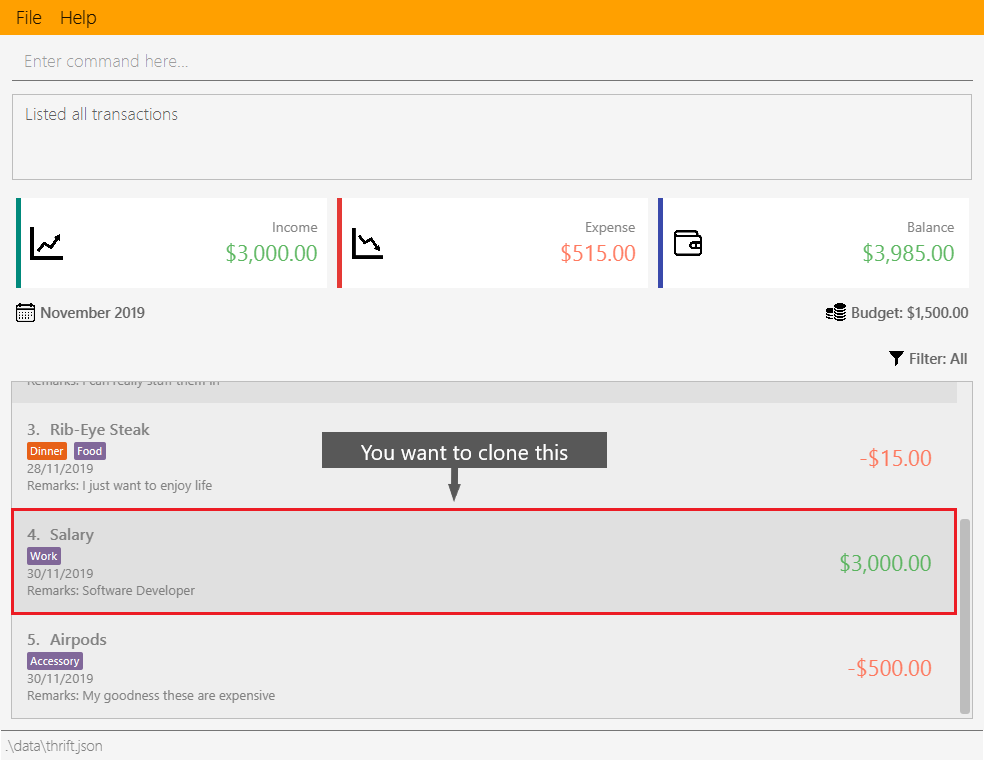 -
To create clones of the 30 November 2019 salary income for the next 12 months from 30 December 2019 up to 30 November 2020, you type clone i/4 o/monthly:12 and press Enter.

-
You can see that 12 clones of the transaction at index 4 are created.

3.10. Undoing the previous undoable command: undo
Do not panic if you have accidentally made a mistake in THRIFT, like deleting the wrong transaction.
THRIFT provides an undo command to solve your trouble! You can revert to the previous state
of THRIFT using undo.
Undo can only apply to undoable commands. Undoable commands refer to commands that modify the data of the THRIFT application.
Undoable commands are: add_expense, add_income, delete,
update, clone, tag, untag, budget.
|
| You cannot undo undoable commands once the application exits. |
3.10.2. Example usage:
Suppose you want to delete the second transaction "Bursary" in THRIFT, but you remove the third transaction "Chicken Rice" instead!
One possible solution is that you add the transaction manually back into THRIFT, but this is too troublesome! You can
retrieve the deleted transaction by performing undo.
To undo the delete command:
-
Type undo into the Command Box and press Enter:

-
You will see that a success message displays in the Result Box, and the transaction "Chicken Rice" returns to its original position in the list:

3.11. Redoing the undone command: redo
Misuse of undo command? No worries, THRIFT provides redo command to help you in this situation.
You can restore the previous state of the undone transaction.
Redo command is only applicable to undoable command.
|
You cannot redo undone commands once the application exits or new undoable command is executed after undo.
|
3.11.2. Example usage:
Suppose you had undone the addition of the transaction "Chicken Rice" (See: Undoing the previous undoable command),
but you decide to track the transaction using THRIFT. Instead of adding the transaction manually, you can add back
the transaction by executing redo.
To redo undone add_expense command:
-
Type redo into the Command Box and press Enter:
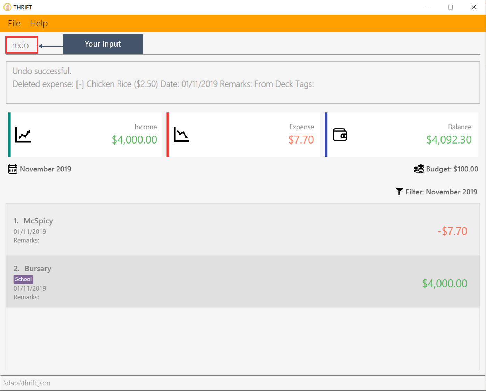 -
You will see that a success message displays in the Result Box and the transaction "Chicken Rice" adds back to the list:
3.12. Finding transactions with keywords: find
THRIFT lets you find and list all transactions whose REMARK or DESCRIPTION contain your specified search term. DESCRIPTION is
the name of the transaction which you enter as n/DESCRIPTION.
3.12.1. Command syntax
To execute the find command, you have to use the following syntax:
find SEARCH_WORD [SEARCH_WORD]
3.12.2. Example usage
Imagine that you wish to find all of your transactions that contain the words The Deck because you would like to see how often you visit there.
-
Your transaction list already contains a few transactions with meals that you ate at The Deck:
-
You want to refine your search to only show transactions that contain the keywords The Deck. You type: find The Deck and press Enter:
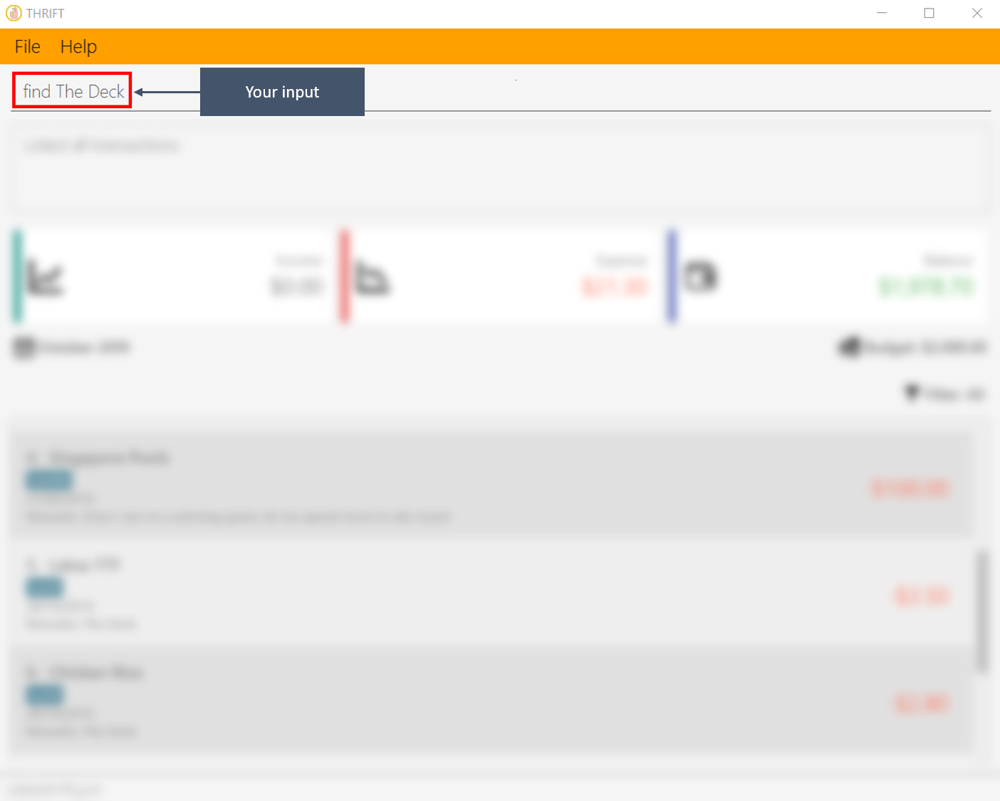 -
Your transaction list will now only contain transactions containing the words The or Deck.
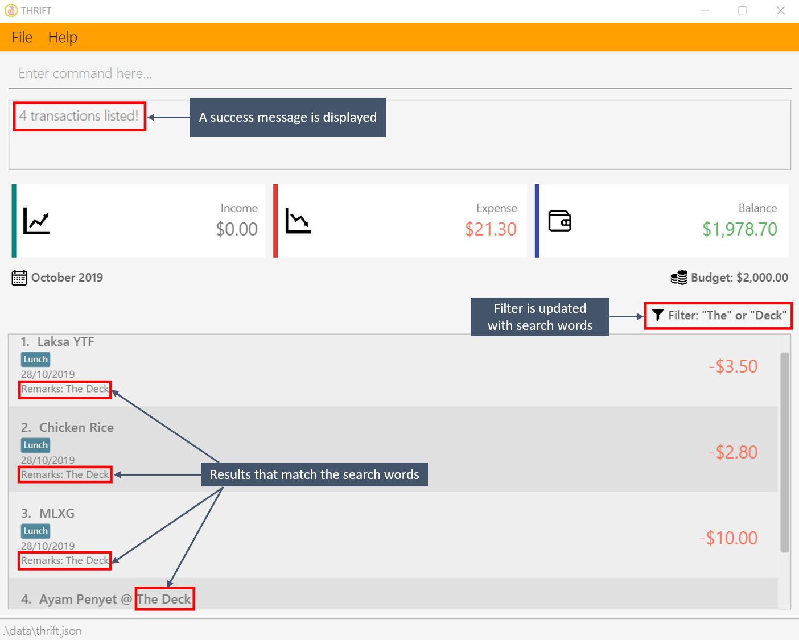
3.13. Listing transactions with the use of filters: list
By using the list command, you are able to list out all the transactions, or filter by month if you wish to do so.
3.13.1. Command syntax
To execute the list command, you have to use the following syntax:
list [m/MONTH]
3.13.2. Example usage
Imagine that you wanted to take a look at how much you spent and saved the previous month! For example, you want to show only the transactions that occurred in Oct 2019.
To list the transactions of Oct 2019:
-
The default interface shows all transactions for the current month, in this case Nov 2019.

-
You can simply type list m/10/2019 into the command input and press Enter:
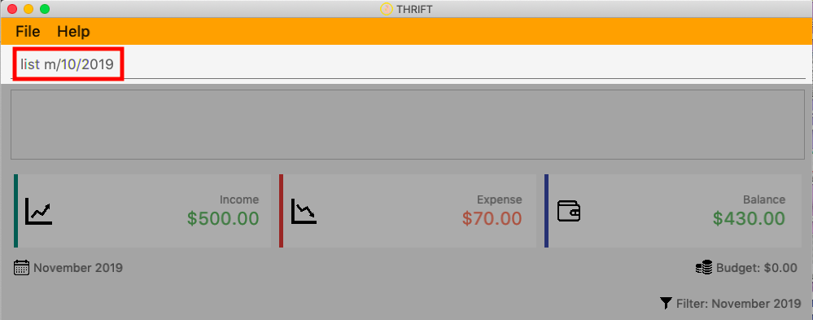 -
Your transaction list will now show all transactions that were added in Oct 2019. The income, expense, and balance values in the UI will be updated to reflect the correct values for the month as well! Lastly, the filter icon will update to show you what filter is currently in use, in case you are ever confused about the current list of transactions shown.

3.14. Displaying help page: help
New to THRIFT? Or forget about some of the commands used in THRIFT? You can run help to obtain the link to this comprehensive user guide. It saves the trouble of saving the URL of this user guide.
3.14.1. Command syntax
To execute the help command, you have to use the following syntax:
help [COMMAND]
3.14.2. Example usage
Suppose you want to add a transaction to THRIFT, but you had forgotten about the command to perform this function.
To get the URL of this user guide:
-
Type help in the Command Box and press Enter:
-
You will see the URL of the user guide in the popup window:
| Alternative methods: press F1 or click on Help in the menu bar, and then click on Help in its sub menu. |
However, if you just want to view the usage syntax of the add_expense command because you had forgotten the exact format,
you can enter help add_expense instead of help.
You will see a simplified help version of the add_expense command displays in the Result Box:
3.15. Exiting THRIFT: exit
Thinking about exiting THRIFT after you have added the transaction? You can enter exit in the Command Box or click on the close button at the top-right corner of the application (if you are on Windows).
3.16. Generating an external report [coming in v2.0]
With this feature, you will be able to save your monthly budget report into an external file for your record purposes. The report will clearly state your expenditure, income and remaining budget for the month.
3.17. Recommending dining options based on budget using Artificial Intelligence [coming in v2.0]
Depending on your transactions, remaining budget and the remaining days to the end of the month, THRIFT will recommend you dining places in NUS which will suit your budget. For example, if you spent too much and are running low on funds, you might get recommended to travel to the Arts canteen to eat since there are cheap options there.
3.18. Encrypting THRIFT data [coming in v2.0]
If you are especially conscious about having your data spied on, this function will definitely ease your worries. With encryption enabled, your data will not be known to the intruder should they steal your THRIFT application data.
4. Frequently asked questions
Q: How do I transfer my data to another Computer?
A: Runs the application in the other computer and overwrite the empty data file it creates with the file that contains the data of your previous THRIFT application.
Q: How do I maximise the size of application’s window?
A: No, you cannot modify the size of the application’s window. It is intentionally fixed.
Q: Can I modify the data files outside of THRIFT?
A: You should not modify any THRIFT data files with any external tools outside of THRIFT, doing so might result in you losing your data.
5. Command summary
-
Budget:
budget v/VALUE d/MONTH/YEAR
Example:budget v/1000 d/10/2019 -
Expense:
add_expense n/EXPENSE_NAME v/VALUE [r/REMARKS] [t/TAG]…
Example:add_expense n/Laksa v/10.50 r/At Hougang t/Lunch t/Food -
Income:
add_income n/INCOME_NAME v/VALUE [t/TAG]…
Example:add_income n/Allowance v/1000 r/From my parents t/Monthly -
Delete:
delete i/INDEX
Example:delete i/1 -
Update:
update i/INDEX PREFIX_LETTER/UPDATED_DETAILS …
Example:update i/1 n/Curry Laksa v/5 t/Lunch t/Dinner -
Clone:
clone i/INDEX o/FREQUENCY:NUMBER_OF_OCCURRENCES
Example:clone i/1 o/monthly:12 -
List:
list [m/MONTH]
Example:list m/01/2019 -
Tag:
tag i/INDEX t/TAG_NAME…
Example:tag i/8 t/Debt -
Untag:
untag i/INDEX t/TAG_NAME…
Example:untag i/7 t/Important -
Convert:
convert [v/VALUE] c/CURRENCY…
Examples:
convert c/USD
convert v/1000 c/SGD c/JPY -
Undo:
undo -
Redo:
redo -
Help:
help [COMMAND]
Example:help delete -
Exit:
exit
6. Appendix
6.2. Tag keyword colours
The following table lists the tag keywords that correspond to each colour, if the tag name is not on this table, it will be Purple in colour.
| Green | Red | Blue | Orange |
|---|---|---|---|
Allowance |
Debt |
Shopping |
Breakfast |
Award |
Fees |
Travel |
Brunch |
Salary |
Gamble |
Transport |
Dinner |
- |
- |
- |
Groceries |
- |
- |
- |
Lunch |
- |
- |
- |
Snack |
- |
- |
- |
Supper |
6.3. Supported currencies
THRIFT supports the following currencies by default:
-
SGD
-
AUD
-
BGN
-
BRL
-
CAD
-
CHF
-
CNY
-
CZK
-
DKK
-
EUR
-
GBP
-
HKD
-
HRK
-
HUF
-
IDR
-
ILS
-
ISK
-
INR
-
JPY
-
KRW
-
MXN
-
MYR
-
NOK
-
NZD
-
PHP
-
PLN
-
RON
-
RUB
-
SEK
-
THB
-
TRY
-
USD
-
ZAR